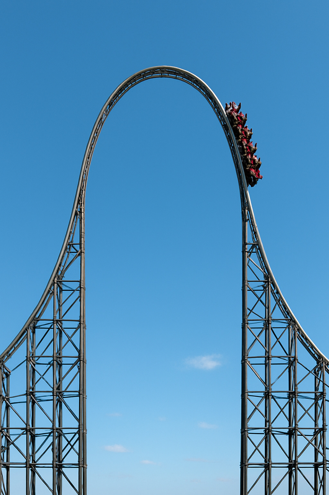

Rational Function

Equations: y = 13 / x² − 1.1, y = −(1/1.3)·x² + 5.96
Transformations: vertical shift downwards by 1.1 units, vertical stretch by a factor of 13. Reflection over x-axis, vertical stretch by a factor of 1/1.3, vertical shift upwards by 5.96 units
Domain and ranges: y between 0 and 4. y greater than 4
Used this image twice, it's a pretty good roller coaster to plot though, just need to restrict the range and reflect the rational to get it done